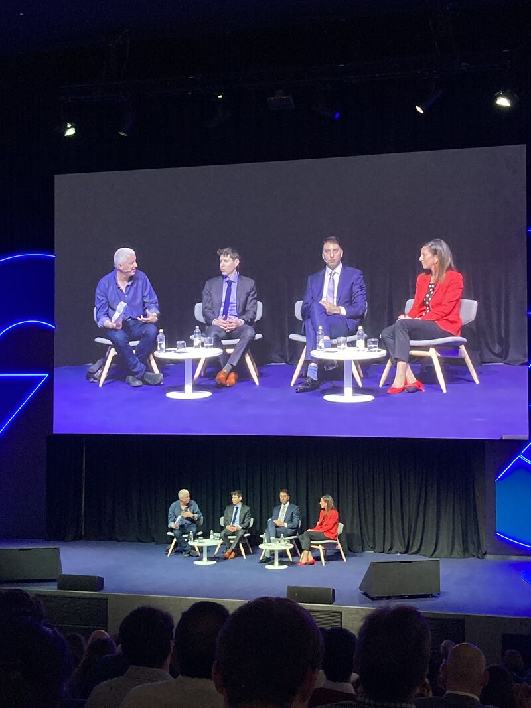
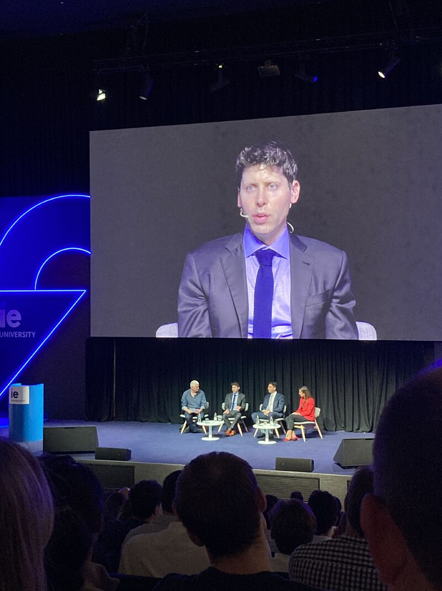
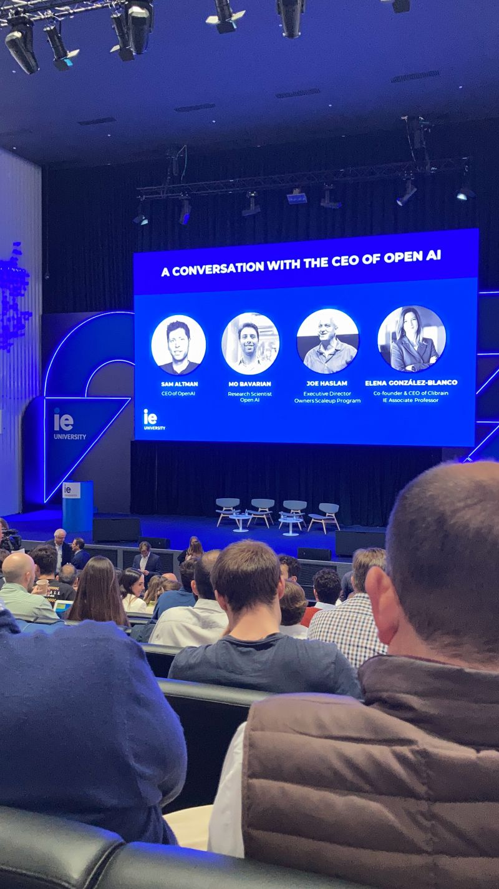

IE School of Science and Technology

Master's in Business Analytics and Big Data at IE. Highlights from the program (datathons, impact project) are summarized on the home page—including 1st place at the IE × NTT DATA & o9 Sustainability Datathon and the IE Impact Project (news recommender with Microsoft).
Sam Altman at IE
I attended this as part of the IE student community (alongside faculty and guests): A conversation with the CEO of OpenAI with Sam Altman (OpenAI). Photos from the session:


